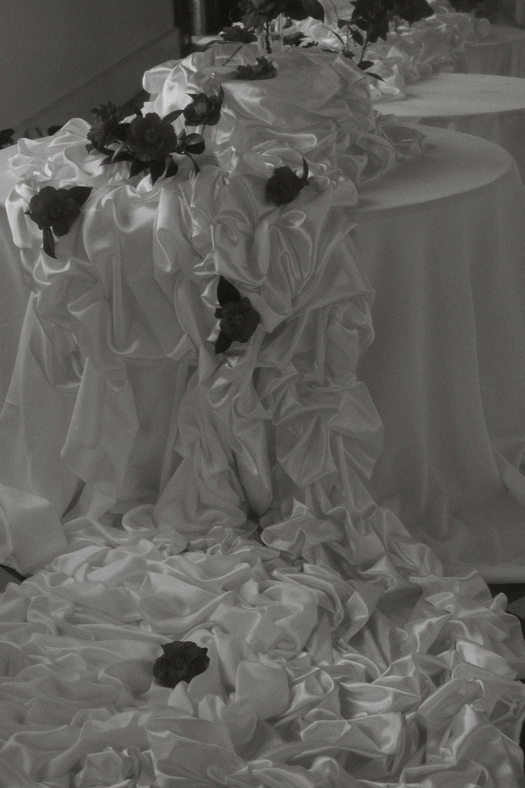
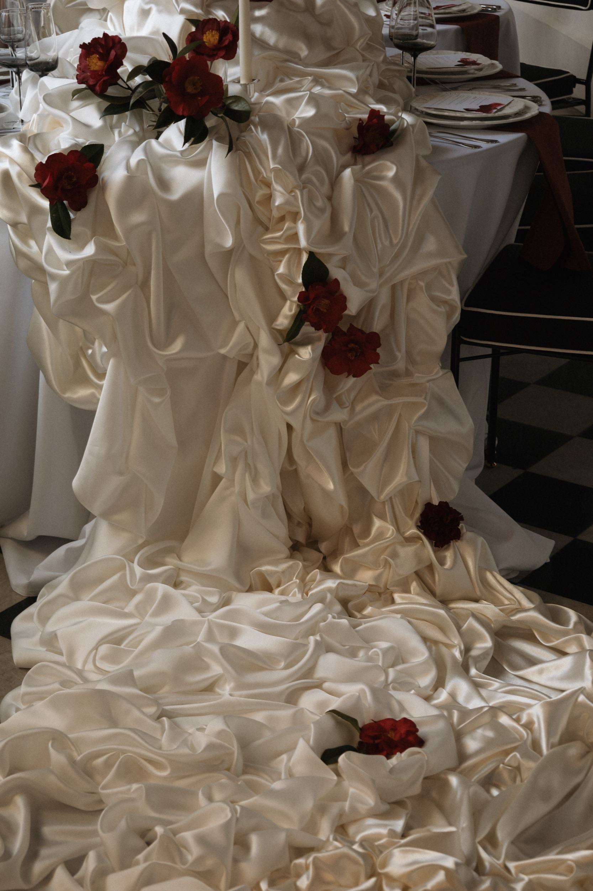
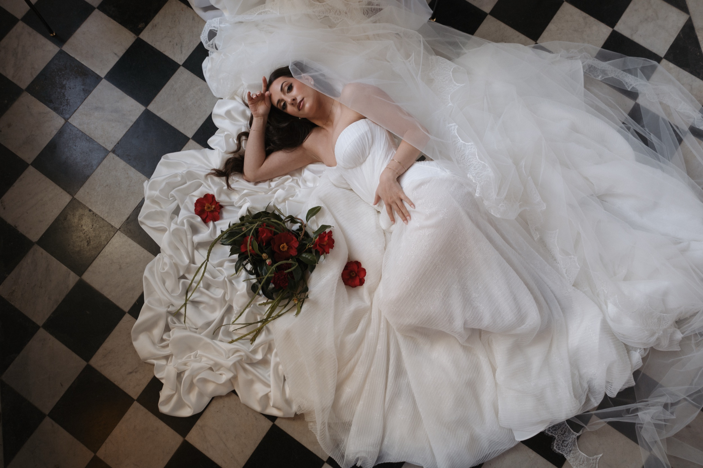
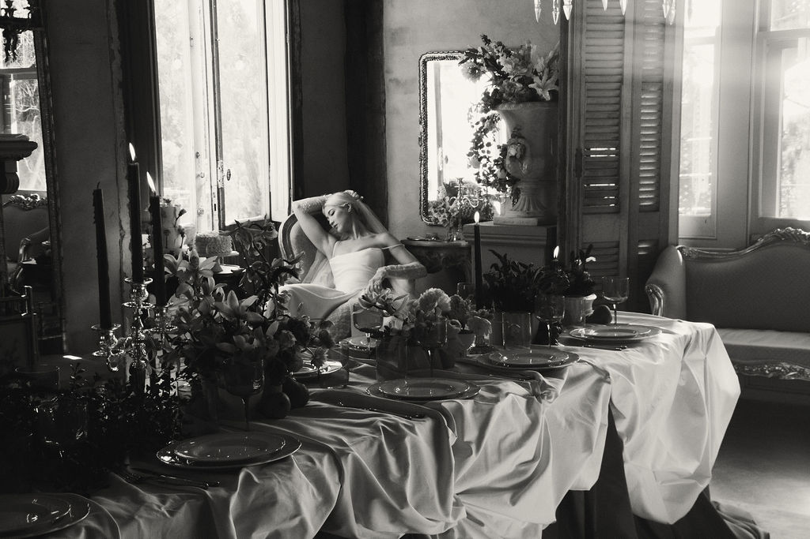
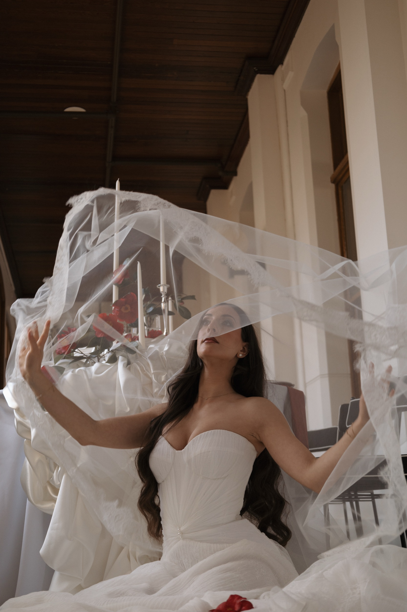

Fabric as
architecture
At SAID STUDIO we believe fabric has the power to completely change the way a space is experienced. Every installation is designed specifically for the venue, using drapery to introduce softness, define spaces, frame key moments and create architectural impact.
Whether it's a ceremony backdrop, statement installation or sculptural tablescape, every piece is developed, fabricated and installed by our team from start to finish.

Small-scale textile details designed to carry fabric through the finer points of a celebration. From ruffled bouquet details and custom table runners to feature tablecloths and decorative accents, each piece is created to complement the wider design.

For ideas that call for something entirely custom. From oversized handmade lampshades and fabric-wrapped photobooths to welcome signs and sculptural features, we design and create bespoke textile installations specifically for the space and brief.
Initial Consultation
We start with a conversation to understand your vision, inspiration and what draws you to draping. At this stage we discuss your ideas, rough measurements, budget and any venue requirements.
Concept & Quote
Based on our discussion, we prepare a tailored draping proposal outlining the recommended installations, fabric selections and investment required. This may include reference imagery or mock-ups to help visualise the final look.
Design & Planning
Once your booking is confirmed, we refine the details together — finalising fabrics, colours, installation locations, measurements and coordinating with your venue or other suppliers where required.
Installation Day
Our team manages the complete installation on site, including all draping hardware, fabrics and styling elements. We ensure everything is professionally installed and event-ready before guests arrive.
Packdown
After your event, we return to carefully remove all draping and equipment, leaving the venue as we found it.
Recent Installations






Every installation is one of one
All draping and installation work is custom-designed and quoted individually. Pricing varies based on the scale, complexity and fabric selection required to bring your vision to life. To receive a tailored proposal, reach out via our enquire page with your venue details and creative direction.